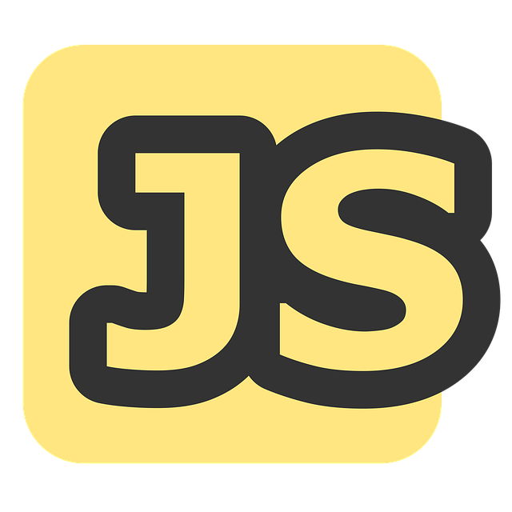
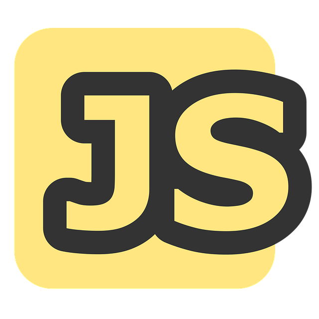

Youssef KOSSAMA
+33642339706


Permis B
Mobile secteur Besançon
Anglais professionnel

 



SOFT SKILLS
- Ecoute active
- Flexibilité et adaptabilité
- Respect
DEVELOPPEUR WEB
Passionné par l'univers du code, je recherche un stage pour mettre en pratique mes compétences fraîchement acquises. Créatif, motivé et avide d'apprentissage, je suis impatient d’approfondir mes connaissances et de contribuer à des projets passionnants.
COMPETENCES EN COURS D'ACQUISITION
Partie front-end
- Installer et configurer son environnement de travail en fonction du projet web ou web mobile
- Maquetter des interfaces utilisateur web ou web mobile.
- Réaliser des interfaces utilisateur statiques web ou web mobile
- Développer la partie dynamique des interfaces utilisateur web ou web mobile
Partie back-end
- Mettre en place une base de données relationnelle.
- Développer des composants d’accès aux données SQL et NoSQL
- Développer des composants métier coté serveur.
- Documenter le déploiement d’une application dynamique web ou web mobile.
EXPERIENCES PROFESSIONELLES
PC Lease LUXEMBOURG
- Vérification des instruments de mesure et test avant intégration sur site
- Mise en service des instruments sur site
- Programmation sur PL7-PRO
- Réunion avec chef de projet et client sur avancée
- Montage et Câblage d’armoire électrique
ASI Consulting Besançon
- Programmation , test , mise en service d’une ligne de traitement d’aluminium (BELGIQUE)
- Test , mise en service de bateaux de croisière (Saint Nazaire, Nagasaki, JAPON)
Formations
- 2024 Formation développeur web ONLINE FORMAPRO Besançon ( en cours)
- BTS Automatisme et informatique industrielle
- Baccalauréat contrôle et régulation
- BEP électrotechnique